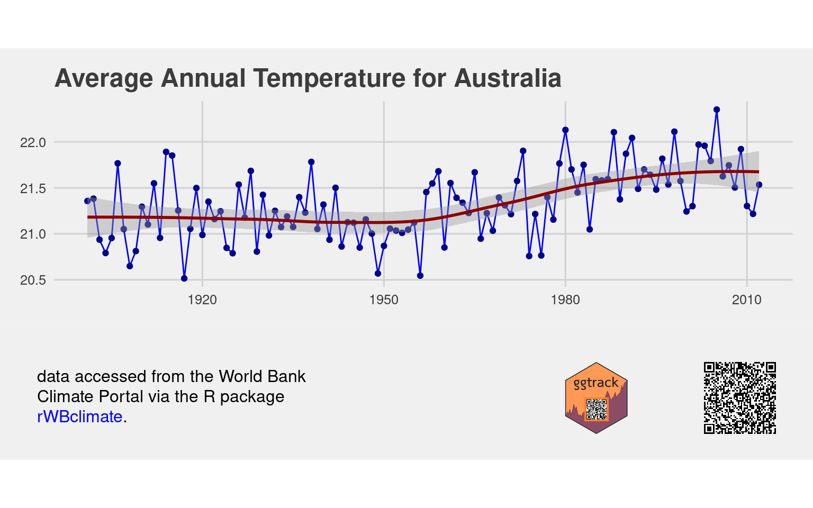

Sometimes in a workplace it is hard to know exactly where or when a specific chart has been produced. This is especially true when someone has copied a chart out of a report to use somewhere else. The ggtrack package aims to solve this problem by embedding enough metadata in the charts image to identify the source and the exact time it was produced.
The metadata is added by way of a QR code embedded in a chart “tracking” footer. The QR code can encode any arbitrary text and will append a time stamp. The text is intended to be a URL or a unique id for the original document or chart source.
QR codes can then be scanned using a phone scanner or the quadrangle package.
The ggtrack footer can also display a corporate logo and additional text.
Installation
You can install the latest version of project from Github with:
devtools::install_github("mrjoh3/ggtrack")On a linux system you may also need to install the png and jpeg libs.
sudo apt install libpng-dev libjpeg-devDevelopment
This package is in the early stages of development. If you have any suggestions, or feature requests please submit an issue. All feedback is welcome.
A Minimum Example
To start you just need a ggplot and some text you wish to encode into the QR. The QR is intended to contain enough information to uniquely identify the report, so a URL, file name or other unique identifier. The QR encode process automatically appends a time stamp. But try to keep the content of the QR code minimal. The for information it is the more pixels its requires and the larger it needs to be. The examples here need a QR code size of 1.8cm to be reliably scanned using a phone off the screen. QR code are encoded using the qrencoder package.
library(ggtrack)
#> Warning: replacing previous import 'ggplot2::last_plot' by 'plotly::last_plot'
#> when loading 'ggtrack'
library(ggplot2)
library(grid)
library(rWBclimate)
library(ggthemes)
temp <- get_historical_temp('aus', "year")
#> No encoding supplied: defaulting to UTF-8.
tp <- ggplot(temp, aes(x = year, y = data)) +
geom_path(color = 'blue') + geom_point(color = 'darkblue') +
labs(title = 'Average Annual Temperature for Australia',
y = 'degrees celcius') +
stat_smooth(se = TRUE, colour = "darkred") +
theme_fivethirtyeight()
ggtrack(tp,
qr_content = paste0('Data accessed using R package: ',
'https://github.com/ropensci/rWBclimate / ',
'https://docs.ropensci.org/rWBclimate/'),
logo = 'man/figures/ggtrack-logo.svg',
caption = paste0('data accesses from the World Bank <br>',
'Climate Portal via the R package <br>',
'<span style="color:blue">rWBclimate</span>.'),
plot.background = element_rect(fill = "#f0f0f0", size = 0))
#> `geom_smooth()` using method = 'loess' and formula 'y ~ x'